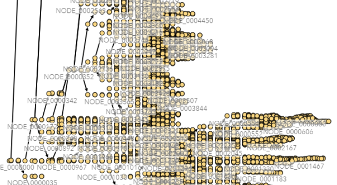
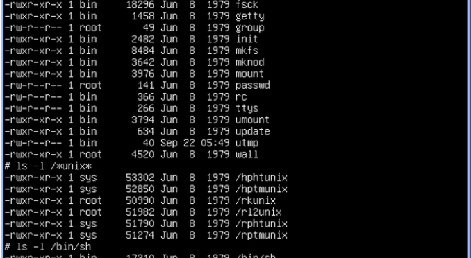

Peer-reviewed research in machine learning applications for healthcare and spatial computing
Active projects across machine learning for healthcare and spatial computing
Developing reinforcement learning algorithms for automated blood glucose management in Type 1 Diabetes patients. Working on the RL4BG framework to integrate exercise parameters and improve multi-patient generalization.
Comparing belief propagation algorithms against traditional tools like TreeTime and PastML for predicting geographic locations in epidemiological phylogenetic trees. Focus on reconstructing transmission trees from phylogenetic data.
Additional coursework and personal projects demonstrating technical capabilities

Computer vision project using pose estimation (WHAM) and ST-GCN networks for automated exercise intensity classification from video data.

Fully functional Unix shell implementation in C with support for interpreted commands, pipeline execution, and process management.